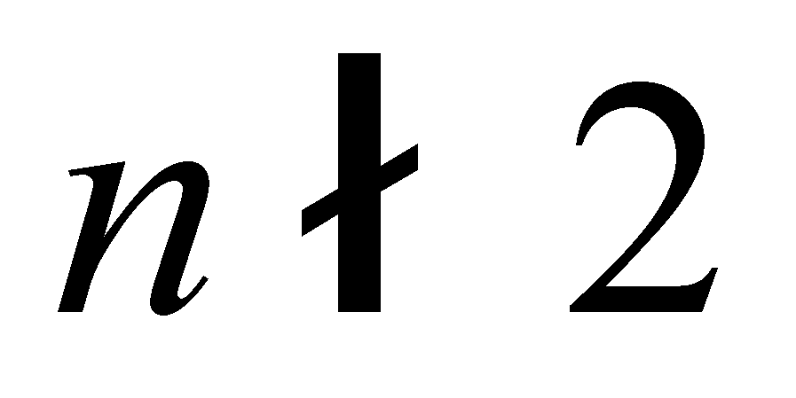

|
|
|
Among the few definitions regarding the above-mentioned notion of system which may be found in dictionaries, let us draw-up an excerpt of the components which are common to all these definitions specialized on specific activity fields.
First of all, one may observe that the system is always a compound (complex) object, a set with at least two elements (that is a reason why we have used the term of systemic set for the set with a number of elements ). The fact that the system is a complex object shall determine (as we have seen in chapter 3) the existence of a common reference for all the objects which belong to the system. Because for each property of the constitutive objects, a specific reference of that property is required, the set (union) of the references which are specific to the common properties shall make-up a complex object - the internal reference system of that complex object.
Secondly, between the objects which make-up the system (its elements), there are always mutual dependence relations deployed between some of their properties. Therefore, interdependence relations shall be established both between the internal objects of the complex object (more exactly, between the possible couple of elements) and between each from these objects and the common reference of the complex object. We have noticed (also in chapter 3) that these relations between objects are in fact relations between the internal reference system of these objects.
Thirdly, there is at least one invariant order relation along the set of the system’s elements, as long as the system exists. This is the meaning of the systematization relations which are applied on a set of objects (either real or abstract), which will generate a system.
Fourthly, the objects which make-up the system may belong to any processual class of objects (of type Sx , x =0, 1, 2, ...n), such as, for example, the fluxes or other types of far more complex types; it is important only that the system’s objects to comply with the above-mentioned conditions. The constitutive objects of a system may be either real (material) or abstract (graphical symbols, words, collocations, sentences, phrases etc.) objects, and we are therefore dealing with processual objects of various ranks.
Copyright © 2006-2011 Aurel Rusu. All rights reserved.